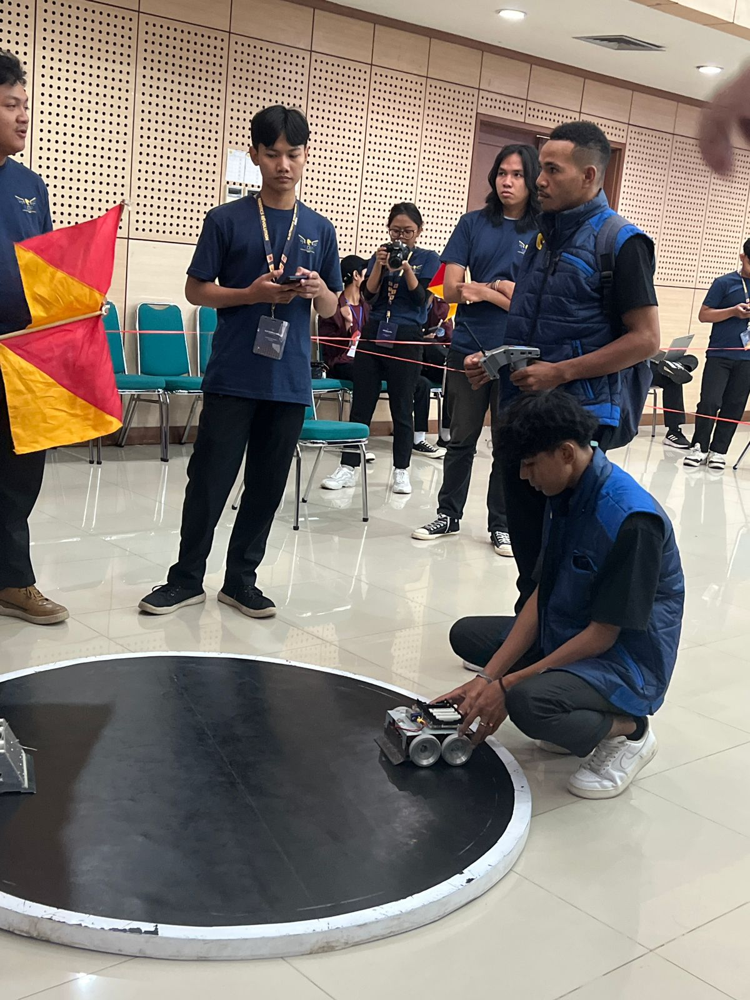
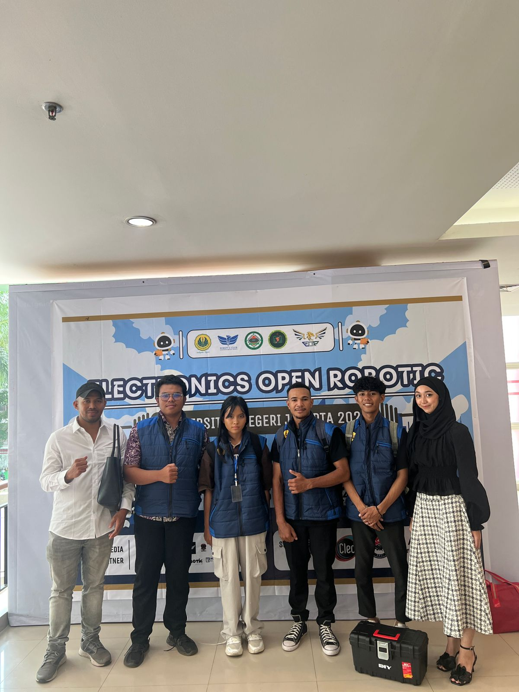
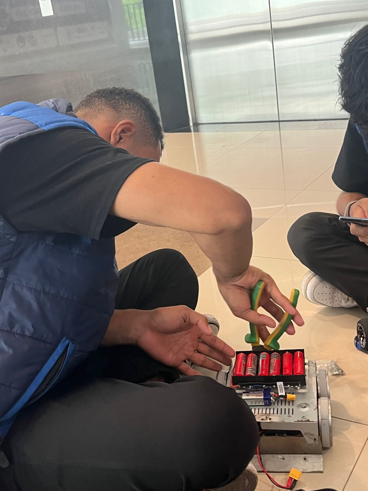
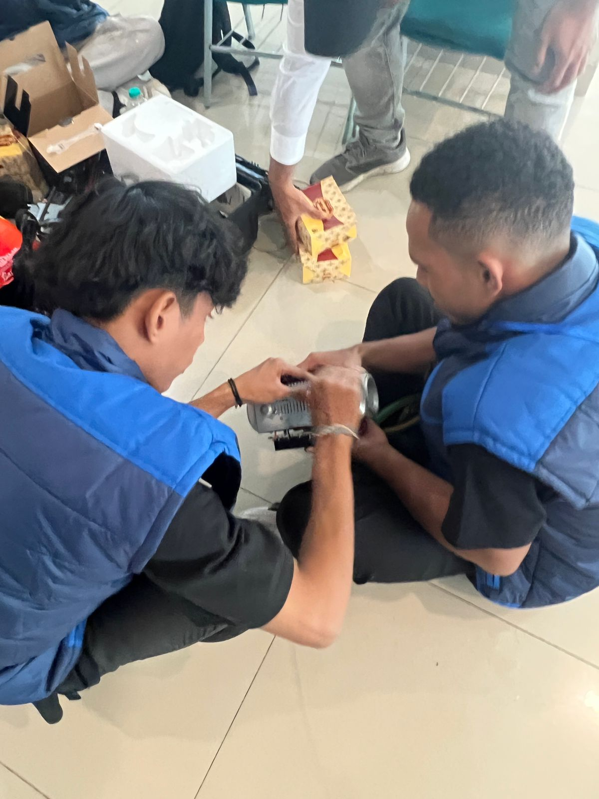
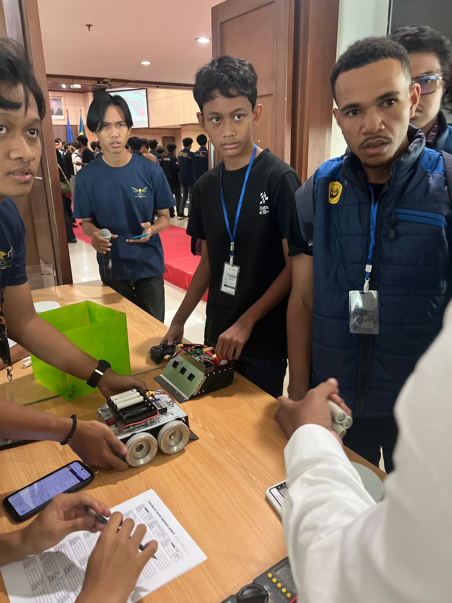
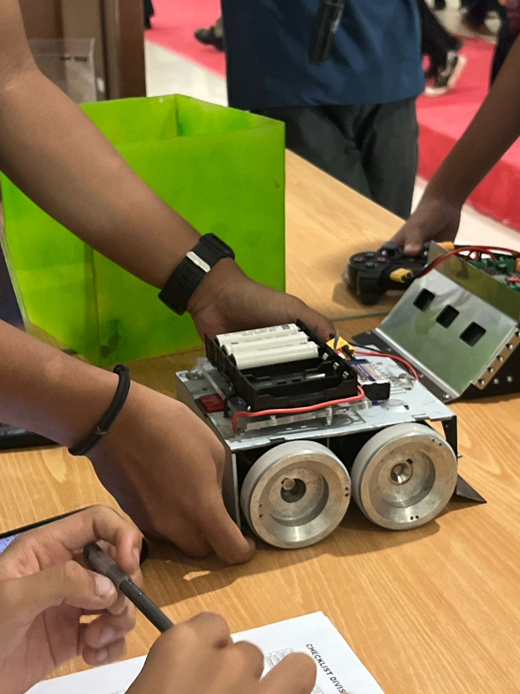
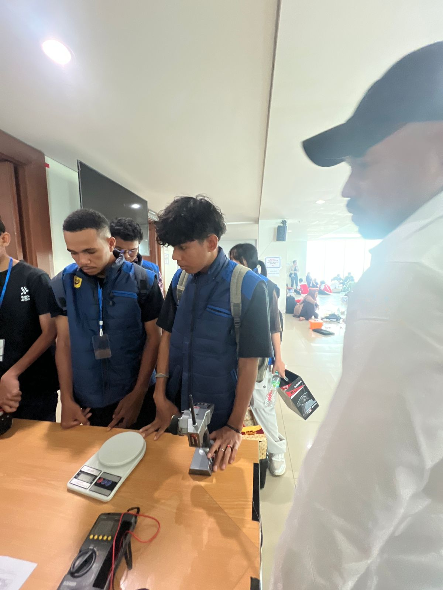
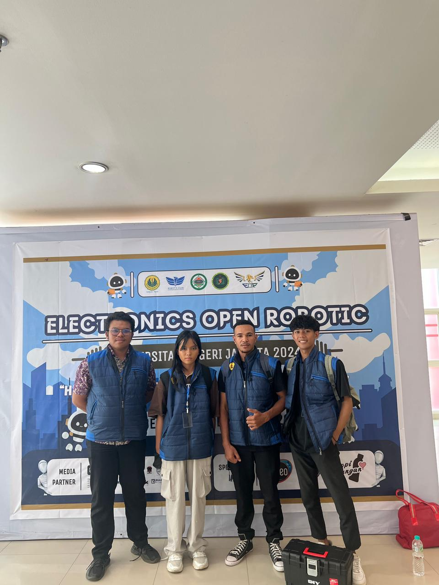

Electronic Open Robotic UNJ (EOR-UNJ) Sumo Robot Competition Jakarta (2024)








A collection of moments from projects, workshops, and professional development activities I have participated in. Each piece stands as a testament to my dedication to quality and innovation.